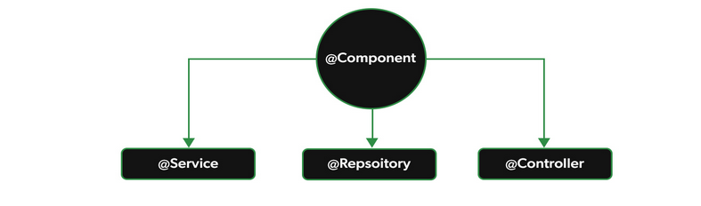

As anotações Stereotype indicam que nossas classes Java serão Beans,
gerenciados pelo Spring.
@Component:
Informa ao Spring que a classe será gerenciada por ele, permitindo
injeção de dependências. No entanto, é uma notação genérica.
@Service:
Indica que a classe representa um serviço da aplicação, ou seja,
nossas regras de negócios.
@Repository:
Indica ao Spring que a classe possui regras de negócio do banco de
dados ou lida com operações CRUD.
@Controller:
Representa os endpoints da aplicação web no modelo MVC, lidando
com solicitações do usuário e retornando a resposta apropriada.
@RestController:
Representa os endpoints da aplicação web que não envolvem nenhuma
view (interface).

imagem da hirarquia das anotações do Stereotype
Core
Beans
@Autowired
@Qualifier
@Value
Context
@Configuration
@ComponentScan
@Bean
@Lazy
@Primary
@Scope
@PropertySource
@PropertySources
@Profile
Boot
@SpringBootApplication
Esta anotação é usada para marcar uma classe de configuração principal do Spring Boot. Ela combina três anotações em uma: @Configuration, @EnableAutoConfiguration e @ComponentScan.
Exemplo de Uso:
@SpringBootApplication
public class MyApplication {
public static void main(String[] args) {
SpringApplication.run(MyApplication.class, args);
}
}
@EnableAutoConfiguration
Esta anotação é usada para habilitar a configuração automática do Spring Boot. Ela instrui o Spring Boot a tentar automaticamente configurar o aplicativo com base nas dependências adicionadas ao classpath.
Exemplo de Uso:
@EnableAutoConfiguration
public class MyConfiguration {
// Configurações personalizadas do aplicativo
}
@ConfigurationProperties
Esta anotação é usada para mapear propriedades de aplicativos configuradas externamente para classes Java. Ela permite injetar propriedades de configuração do arquivo application.properties ou application.yml em um objeto.
Exemplo de Uso:
@ConfigurationProperties(prefix = "myapp")
public class MyProperties {
private String name;
private int port;
// Getters e Setters
}
Web
@RestController
Esta anotação combina as anotações @Controller e @ResponseBody. Ela é usada
para criar controladores RESTful no Spring MVC, onde cada método de controle retorna um objeto serializado
diretamente para o corpo da resposta HTTP.
Exemplo de Uso:
@RestController
@RequestMapping("/api")
@CrossOrigin(origins = "http://localhost:8080")
public class MyController {
@GetMapping("/example")
public String getExample() {
return "Exemplo de GET";
}
@PostMapping("/example")
public String postExample(@RequestBody String data) {
return "Exemplo de POST: " + data;
}
@PutMapping("/example/{id}")
public String putExample(@PathVariable Long id, @RequestParam String name) {
return "Exemplo de PUT para o ID " + id + " com nome " + name;
}
@DeleteMapping("/example/{id}")
public String deleteExample(@PathVariable Long id) {
return "Exemplo de DELETE para o ID " + id;
}
}
@RequestMapping
Esta anotação é usada para mapear solicitações HTTP para métodos de controle específicos em controladores
Spring. Ela pode ser aplicada a nível de classe e/ou método.
Exemplo de Uso:
@RestController
@RequestMapping("/api")
public class MyController {
@RequestMapping("/hello")
public String hello() {
return "Olá!";
}
@RequestMapping(value = "/user", method = RequestMethod.POST)
public String addUser(@RequestBody User user) {
// Adicionar lógica para adicionar usuário
return "Usuário adicionado: " + user.getName();
}
}
@PostMapping
Esta anotação é usada para mapear solicitações HTTP POST para métodos de controle específicos em
controladores Spring.
Exemplo de Uso:
@RestController
@RequestMapping("/api")
public class MyController {
@PostMapping("/user")
public String addUser(@RequestBody User user) {
// Adicionar lógica para adicionar usuário
return "Usuário adicionado: " + user.getName();
}
}
@GetMapping
Esta anotação é usada para mapear solicitações HTTP GET para métodos de controle específicos em
controladores Spring.
Exemplo de Uso:
@RestController
@RequestMapping("/api")
public class MyController {
@GetMapping("/user/{id}")
public String getUser(@PathVariable Long id) {
// Adicionar lógica para recuperar usuário com o ID especificado
return "Detalhes do usuário para o ID " + id;
}
}
@PutMapping
Esta anotação é usada para mapear solicitações HTTP PUT para métodos de controle específicos em
controladores Spring.
Exemplo de Uso:
@RestController
@RequestMapping("/api")
public class MyController {
@PutMapping("/user/{id}")
public String updateUser(@PathVariable Long id, @RequestBody User user) {
// Adicionar lógica para atualizar o usuário com o ID especificado
return "Usuário atualizado: " + user.getName();
}
}
@DeleteMapping
Esta anotação é usada para mapear solicitações HTTP DELETE para métodos de controle específicos em
controladores Spring.
Exemplo de Uso:
@RestController
@RequestMapping("/api")
public class MyController {
@DeleteMapping("/user/{id}")
public String deleteUser(@PathVariable Long id) {
// Adicionar lógica para excluir o usuário com o ID especificado
return "Usuário excluído com sucesso";
}
}
@RequestBody
Esta anotação é usada para mapear o corpo da solicitação HTTP para um objeto no método de controle
Spring.
Exemplo de Uso:
@RestController
@RequestMapping("/api")
public class MyController {
@PostMapping("/user")
public String addUser(@RequestBody User user) {
// Adicionar lógica para adicionar usuário
return "Usuário adicionado: " + user.getName();
}
}
@PathVariable
Esta anotação é usada para indicar que um argumento de método está ligado a uma variável de modelo URI em
um método de controle Spring.
Exemplo de Uso:
@RestController
@RequestMapping("/api")
public class MyController {
@GetMapping("/user/{id}")
public String getUser(@PathVariable Long id) {
// Adicionar lógica para recuperar usuário com o ID especificado
return "Detalhes do usuário para o ID " + id;
}
}
@RequestParam
Esta anotação é usada para acessar os parâmetros de solicitação HTTP em um método de controle Spring.
Exemplo de Uso:
@RestController
@RequestMapping("/api")
public class MyController {
@GetMapping("/user")
public String getUserById(@RequestParam Long id) {
// Adicionar lógica para recuperar usuário com o ID especificado
return "Detalhes do usuário para o ID " + id;
}
}
@CrossOrigin
Esta anotação é usada para controlar o acesso de origem cruzada (CORS) para uma determinada classe em um
controlador Spring.
Exemplo de Uso:
@RestController
@RequestMapping("/api")
@CrossOrigin(origins = "http://localhost:8080")
public class MyController {
// Métodos do controlador
}